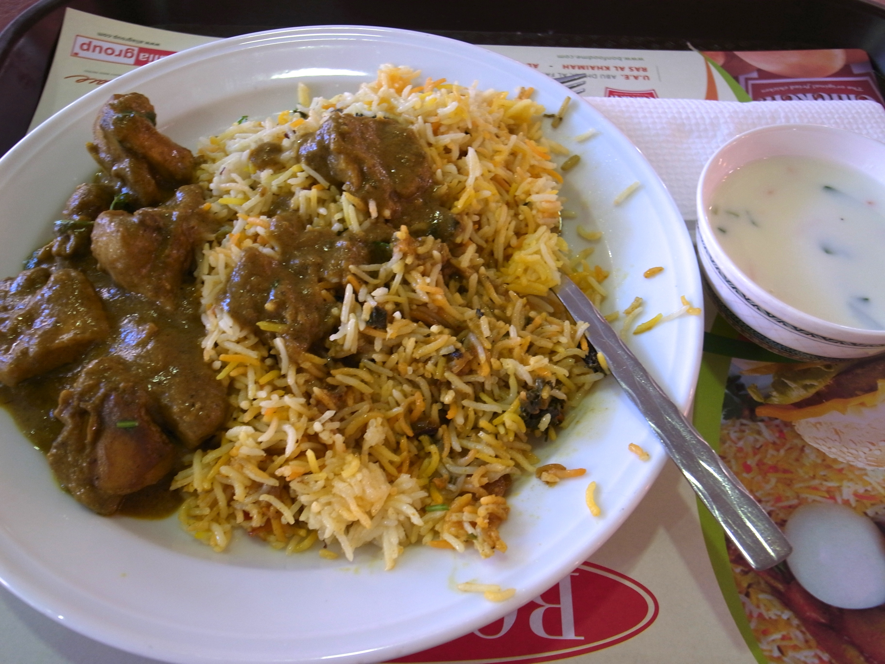

Chiken Biryani Recipe

This image displays the final look of Chicken Biryani a traditional Indain dish, if you follow it closely.
Ingredients Needed:
Chiken Marinade
- Chicken Bone-in thighs/drumsticks 1 kg (2.2 lb)
- Yogurt Curd / dahi 1 cup (240 g)
- Ginger-garlic paste Adrak-lehsun paste 2 tbsp
- Turmeric powder Haldi 1 tsp
- Red chili powder Lal mirch powder 1–2 tsp
- Garam masala powder — 1/2 tsp
- Cumin powder Jeera powder 1 tsp
- Coriander powder Dhania powder 1 tsp
- Fresh mint leaves Pudina 1/2 cup, chopped
- Fresh coriander leaves Cilantro / dhania patta 1/2 cup, chopped
- Salt Namak 1 tsp, or to taste
- Lemon juice Nimbu ras Juice of 1/2 lemon
- Ghee or oil Clarified butter / cooking oil 2 tbsp
- Green chilies Hari mirch 4–5, slit (optional)
- Fried onions Birista Half of the total fried onions below
Rice
- Basmati rice Aged long-grain rice 3 cups
- Green cardamom Choti elaichi 4–5 pods
- Black cardamom Badi elaichi 1 pod
- Cinnamon stick Dalchini 1-inch piece
- Cloves Laung 4–5
- Bay leaf Tej patta 1
- Caraway seeds Shahi jeera 1 tsp
- Salt Namak 1 tbsp, for boiling water
- Lemon juice Nimbu ras Juice of 1/2 lemon
- Water — For boiling rice
Layering
- Ghee Clarified butter 3–4 tbsp
- Warm milk Doodh 1/2 cup
- Saffron Kesar Generous pinch, soaked in warm milk
- OR turmeric powder Haldi 1/2 tsp mixed in milk (saffron substitute)
- Fried onions Birista 4 medium onions total, thinly sliced & fried; divide between marinade and layering
- Fresh mint leaves Pudina 1/4 cup
- Fresh coriander leaves Cilantro / dhania patta 1/4 cup
- Rose water or kewra water — 1 tsp, optional
Steps to follow:
- Prepare the fried onions (birista): Thinly slice 4 medium onions and fry them in oil or ghee until golden brown and crisp. Drain on paper towels. Divide into two equal portions: one half for the chicken marinade and the other half for layering.
- Marinate the chicken: In a large bowl, combine 1 cup yogurt, 2 tbsp ginger-garlic paste, 1 tsp turmeric, 1–2 tsp red chili powder, 1/2 tsp garam masala, 1 tsp cumin powder, 1 tsp coriander powder, 1 tsp salt, juice of 1/2 lemon, and 2 tbsp ghee or oil. Mix well. Add 1 kg chicken pieces, 1/2 cup chopped mint, 1/2 cup chopped coriander, 4–5 slit green chilies, and half of the fried onions. Mix until well coated, cover, and refrigerate for at least 1–2 hours or overnight.
- Soak the rice: Wash 3 cups basmati rice gently until the water runs clear. Soak the rice in water for 30 minutes, then drain well.
- Partially cook the rice: Bring a large pot of water to a boil. Add 4–5 green cardamom pods, 1 black cardamom pod, 1-inch cinnamon stick, 4–5 cloves, 1 bay leaf, 1 tsp caraway seeds, and 1 tbsp salt. Add the drained rice and juice of 1/2 lemon. Boil on high heat for 5–7 minutes until the rice is 70–80% cooked with a firm bite in the center. Do not overcook. Drain immediately in a colander and set aside.
- Start layering: Grease the bottom of a heavy-bottomed pot or Dutch oven with ghee. Spread the marinated chicken evenly across the bottom of the pot.
- Add rice and finishing layers: Layer the partially cooked rice evenly over the chicken. Sprinkle 1/2 cup warm milk mixed with a generous pinch of saffron or 1/2 tsp turmeric, then add the remaining fried onions, 1/4 cup chopped mint, 1/4 cup chopped coriander, 3–4 tbsp ghee, and 1 tsp rose water or kewra water if using. Seal the pot tightly with a lid; use aluminum foil or dough around the edges for a better seal.
- Cook on dum and serve: Place the sealed pot on high heat for 5 minutes to build steam. Then reduce the heat to the lowest setting, place a flat tawa or heat diffuser under the pot, and cook for 25–30 minutes. Turn off the heat and let it rest for 10–15 minutes before opening. Gently fluff the rice with a fork and serve hot with raita made from 1 cup yogurt, 1/2 cup chopped cucumber, salt, roasted cumin powder, and chopped coriander.
Main